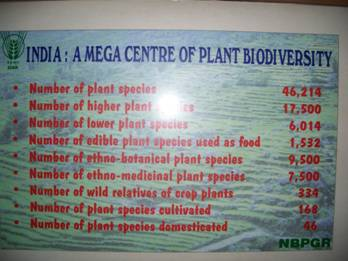
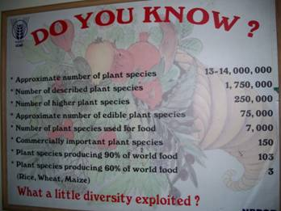

WILDLIFE RESOURCES OF TAMIL NADU
One sixth of landmass of Tamil Nadu is covered with forests. According to State of forest report 2003 by the Forest Survey of India, the total forest cover of the State is 22643 KM² constituting 17.41% of geographic area. This includes 2440 KM² of very dense forest, 9567 KM² of moderately dense forest and 10636 KM² of open forest. Tamil Nadu ranks 11th among the Indian States and Union Territories with reference to total forest cover. The recorded forest area of the state is 22,877 KM² constituting 17.59% of the geographic area. Tamil Nadu ranks 13th among the Indian States and Union Territories with reference to total recorded forest area.
RESERVES
The Angiosperm diversity of India includes 17,672 species. With 5640 species, Tamil Nadu ranks 1st among all the States in the Country. This includes 533 endemic species, 230 red-listed species, 1559 species of medicinal plants and 260 species of wild relatives of cultivated plant. The Gymnosperm diversity of the country is 64 species of which Tamil Nadu has 4 species of indigenous Gymnosperms and about 60 introduced species. The Pteridophytes diversity of India includes 1022 species of which Tamil Nadu has about 184 species. Tamil Nadu wild plant diversity also includes vast number of Bryophytes, Likens, Fungi, Algae and Bacteria.
|  |  |
The faunal diversity of Tamil Nadu includes 165 species of fresh water Pisces, 76 species of Amphibians, 177 species of reptiles, 454 species of birds and 187 species of mammals. According to the CAMP reports the red-listed species include 126 species of Pisces, 56 species of Amphibians, 77 species of reptiles, 32 species of birds and 40 species of mammals. The endemic fauna includes 36 species of Amphibians, 63 species of reptiles, 17 species of birds and 24 species of mammals. Schedule I animals include 22 species of mammals, 42 species of birds and 9 species of reptiles. Schedule II animals include 13 species of mammals. Schedule III animals include 5 species of mammals. Schedule IV animals include 5 species of mammals, 367 species of birds, 109 species of reptiles and 23 species of Amphibians. Schedule V animals include 13 species of mammals and 1 species of birds.
Wildlife and wildlife habitats which are products of millions of years of evolution should be conserved and sustainably managed to meet the social, economic, ecological, cultural, recreational and spiritual needs of the present and future generations. Water, wilderness and wildlife are intimately and irrevocably linked. Wilderness areas and particularly forests which are the repository of wildlife and biodiversity have either shrunk or disappeared due to severe agricultural, natural and domestic pressures. Natural processes, forests and other wildlife habitat recharge aquifiers maintain water regime and moderate impacts of floods, droughts and cyclones and thereby they ensure food security and regulate climate change. They are also source of food, fodder, fuel and other products supplementing the sustenance of local communities. Conservation of biodiversity is directly linked with conservation of eco-systems and thus ensure water and food security. The ecological security of the State as a whole and economic well being of the people nearby through water and food security can only be achieved by conserving our biodiversity in perpetuity without any reservation.
Forests and the wilderness areas in Tamil Nadu are the treasure-house for multitude of biodiversity beyond our imagination. They are also the repository and virtual pharmaceutical factories of an array of medicinal plants. These areas forms the best underground water tank holding volumes of precious pure water which are released gradually into the streams, rivers and wells down below. They form the carbon sink, sucking and storing the lethal carbon-di-oxide for the benefit of all living things. They are the most natural lungs providing the vital oxygen for all the living things to breathe and survive.
The Vandalur Arignar Anna Zoological Park is doing yeomen service for the cause of wildlife recreation, education, conservation and research. Even though strictly it does not come within the purview of Protected areas, it has been consciously included under this guideline for the benefit of those interested in wildlife conservation.
The Protected Areas of Tamil Nadu have the immense potential to arouse the senses, humans are endowed with - be it visual, auditory, smell, taste or touch. The sensory experience one enjoys are unique in more than one way that it lingers on in the mind of persons through out his life in perpetuity.
Even though traditionally we have respected and revered and conserved our natural wealth and biodiversity, they have come under severe threat recently due to various anthropogenic causes. Degradation of forests, the habitats of wildlife, fragmentation, overgrazing by domestic cattle, forest fires, poaching and killing of animals due to man-animal conflict are the main threats our wildlife population in Tamil Nadu facing today. People’s involvement and support is absolutely essential to make the wildlife conservation a success in our State. Let us understand the need to conserve our natural heritage and make all people conscious to conserve and sustainably manage them for the benefit of present and future well being of the mankind. Man-animal conflict due to clash of interest is taking a serious and mammoth proportion in and around our protected areas and needs special attention and care of all concerned.